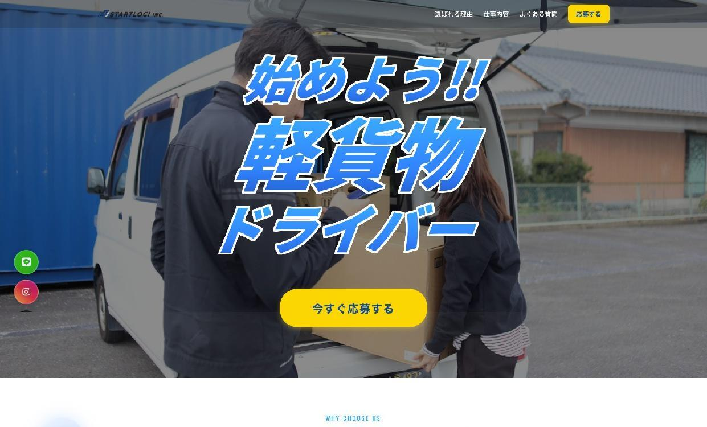
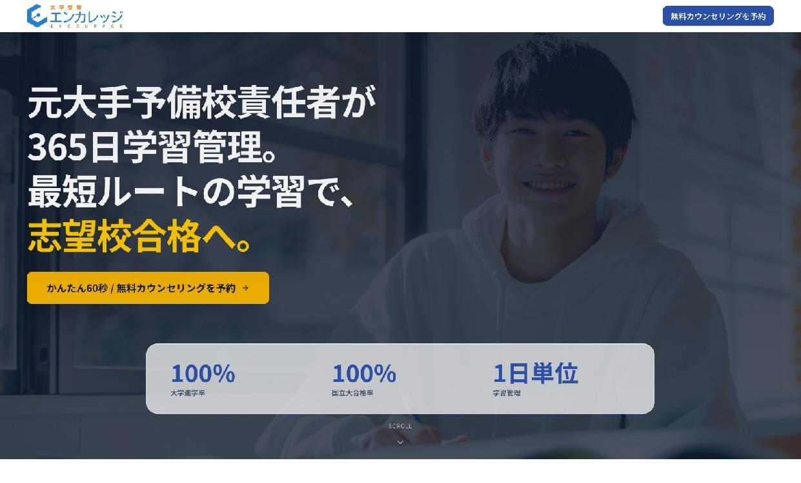

実績 / Work
守秘義務の範囲内で、実際の案件の概要をご紹介します。課題の種類・対応内容・ツールの使われ方など、参考になれば幸いです。
LP・Webサイトの設計と制作


複数のLP・コーポレートサイト・サービスサイトの制作を担当。「何となく古い」「成果につながっていない」「担当者が変わって手が入れられない」といった状態のサイトを、目的から整理して作り直す案件が多かった。
目的・ターゲット・訴求内容を整理してから構成を設計し、デザイン・コーディングまで一貫して対応。WordPressや静的HTML/CSSで実装し、クライアントが自分で更新できる設計を重視した。
「作って終わり」ではなく、公開後に自分たちで運用できる形にすることを重視。ページ構成の意図をドキュメント化し、引き継ぎまで含めて対応した。
オンラインスクール向け AIカリキュラムの企画・設計・制作
オンラインスクール事業者から「AI学習を提供したい」という相談を受けた。何を教えるか、どういう順番で、誰に向けて、というところが未整理の状態からのスタートだった。
企画フェーズでは対象受講者の定義・学習テーマの優先順位・全体構成を設計。設計フェーズで単元ごとの構造・難易度・演習方針を整理し、制作フェーズで各ユニットの教材・解説・演習コンテンツを作成した。
コンテンツの質だけでなく、受講者が途中でやめない学習設計を重視した。単元ごとの難易度・量・演習のバランスを繰り返し調整しながら制作した。
ドライバー管理〜請求処理の業務ツール設計・開発
ドライバーの状態管理・アサイン・請求処理が、それぞれ別のスプレッドシートや紙で管理されており、担当者が手動で集計・確認する工数が毎週発生していた。情報の分断により、確認ミスや遅延も起きやすい状態だった。
管理すべきデータ（ドライバー情報・稼働状態・アサイン履歴・請求明細）を整理し、1シートで見通せる構造に再定義した。その上で Google Spreadsheet + GAS を使って、状態管理・アサイン・請求処理を一つの流れに統合した。
大きなシステムを入れるのではなく、今ある環境で実際に使われる形を最優先した。担当者が一人でもメンテナンスできるように設計し、引き継ぎドキュメントと運用ルール整備まで含めて対応した。
対応できる領域
守秘義務のある案件も多く、全ての実績を公開することはできません。以下の領域でご相談いただくことが多いです。
-
業務フロー整理・運用設計
現状の整理から、チームで回せる運用モデルの設計まで。
-
軽量ツールの設計・実装
GAS・Spreadsheet・Slack・API を使った、今の環境で動くツール開発。
-
AI活用の組み込みと整理
どこにAIを入れるかの整理から、現場への定着支援まで。
-
LP・Webサイト制作
目的・ターゲット整理から、設計・実装・引き継ぎまで一貫対応。
-
教材・カリキュラム企画・制作
学習設計の構造化から、各ユニットのコンテンツ制作まで。